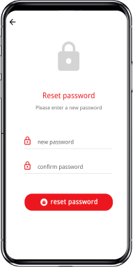
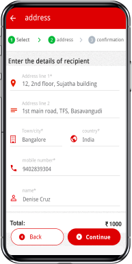
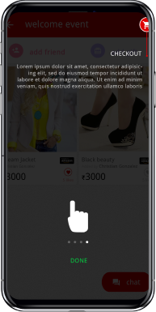

Social Shopping App

When we shop we like to take opinions
of our friends and dear ones. This
app was designed keeping
the social aspect in mind.
Based on the branding guidelines of FlocknShop I came up with the color palatte and used modern sans sarief font, Driod font family.
Driod sans
Driod sans
I started with the home screen and continued with rest of the screens based in the theme and style.
  